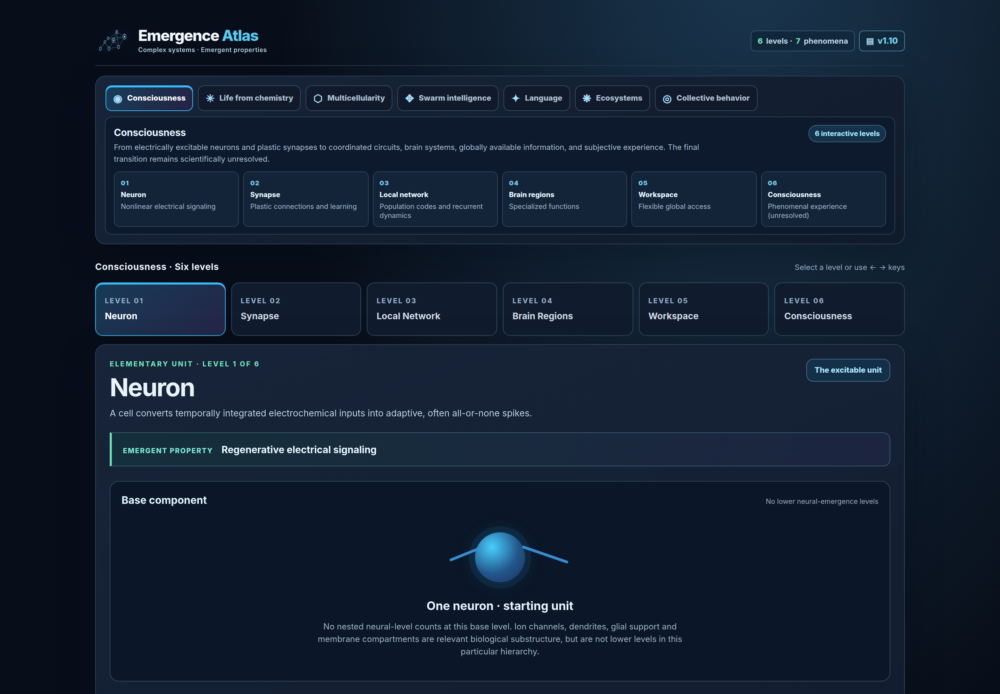
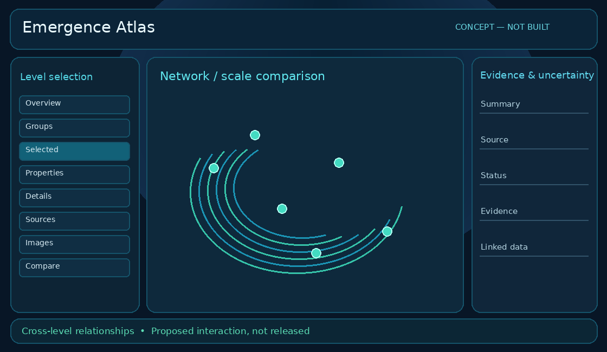

Actual · fresh browser capture

No app layout changed this update. Clean capture is kept separately.
Goal reference
audit_emergence_concept.png · proposed concept, not approved

Completed this update · 1
- WL-024 · p1 · done
Focus comparison sheets on this release and improve zoom clarity.
5 completed in earlier updates
Top priority pending · 4
- T001 · p1 · needs-verification
Verify existing: Retain compact one-line title/subtitle with responsive natural wrap. - T004 · p1 · needs-verification
Verify existing: Align version and data chips, equal control heights. - T005 · p1 · needs-verification
Verify existing: Preserve historical changelog entries and click-to-expand version control. - T006 · p1 · needs-verification
Verify existing: Compact statistics typography and balanced rows.
… + 16 others; 1 need verification.